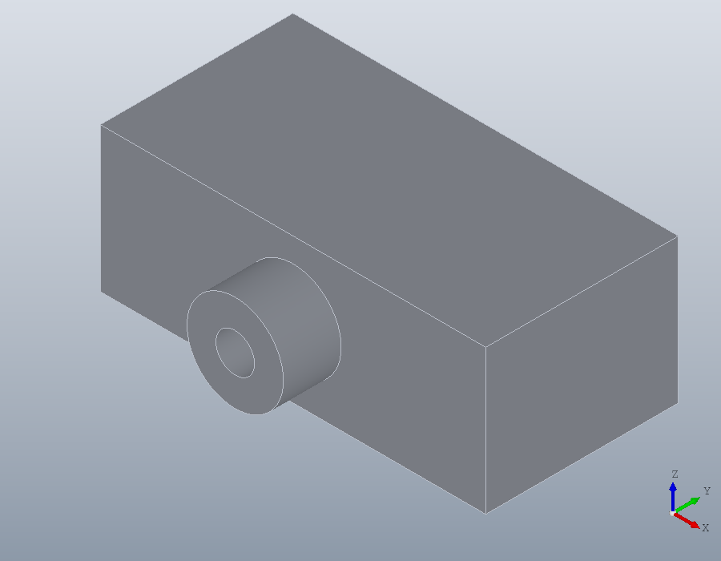
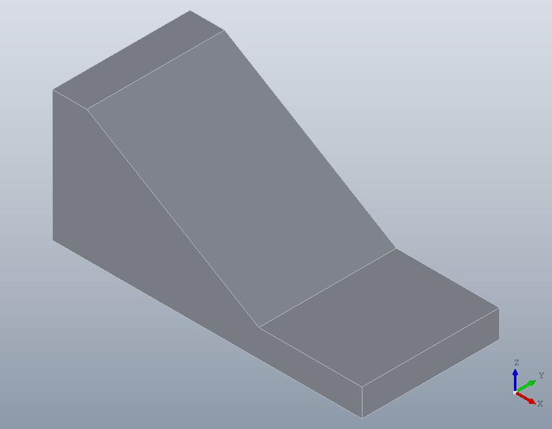
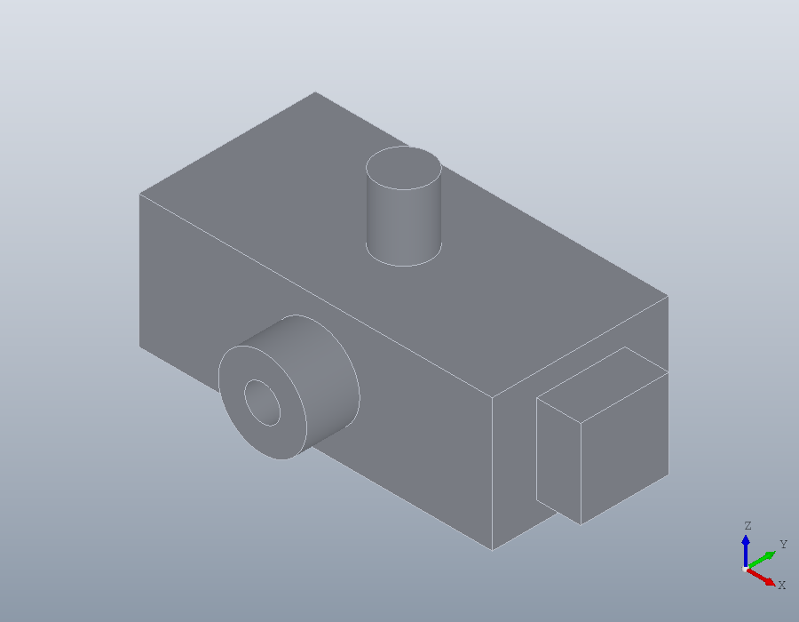

Coordinate systems
A geom.UCS is a sheet of paper laid on a face of a part. You draw on it in its own two coordinates, and extrude, pocket and drill along its normal, so nothing is ever rotated into place. This tutorial lays sheets on parts by hand and by clicking on them in the viewer.
A sheet on a face
A sheet is given by its normal, the way it faces, a point on it, its origin, and a point its x axis runs towards. This is the front face of a block 80 by 40 by 30 standing at the origin: it faces down the y axis, its origin is the lower left corner and its x axis runs along the bottom edge.
block = solid.box (80, 40, 30);
front = geom.UCS ([0, -1, 0], [0, 0, 0], [80, 0, 0])front =
geom.UCS: origin [0, 0, 0], x axis [1, 0, 0], normal [0, -1, 0]The y axis is the normal crossed with the x axis, so the axes are right handed, and on this face y points up. A boss is drawn on the sheet as if on paper: a ring 20 across with a bore of 8, centred 40 along and 15 up, its points carrying a third column of 1 for half circles. Laid on the sheet and extruded, it grows out of the face, towards -y.
boss = geom.Region ([30, 15, 1; 50, 15, 1], {[36, 15, 1; 44, 15, 1]});
boss.UCS = front;
part = union (block, solid.extrude (boss, 12));
show (part);
Picking the sheet
Typing a sheet is easy on a face that looks along an axis. On a sloping face it means working out a normal, so the viewer picks it instead. This bracket is a plate with a wedge on it, sloping down from 38 high to the plate.
plate = solid.box (90, 40, 8);
ramp = translate (solid.wedge (60, 40, 30, 10), [0, 0, 8]);
bracket = union (plate, ramp);pickucs asks for three clicks, each prompted at the foot of the window: the sloping face, then a point where the x axis starts and one it runs towards, here the two corners of the slope's lower edge. Enter keeps the origin at the first corner. Every click snaps to what it lands on, a corner to its vertex and an edge to its middle.
Asked for a second output, the pick also returns CODE, the expression that makes the same sheet from coordinates. This guide is built with nobody at the mouse, so the build clicks at the points named here, and what is shown is what pickucs returned for those clicks.
V = show (bracket);
[U, CODE] = pickucs (V)U =
geom.UCS: origin [60, 0, 8], x axis [0, 1, 0], normal [0.514496, 0, 0.857493]
CODE = geom.UCS ([0.5144957554, 0, 0.8574929257], [60, 0, 8], [60, 1, 8])
Put CODE in the script in place of the pick, and the script stands on its own, with nobody needed at the mouse to run it.
U = geom.UCS ([0.5144957554, 0, 0.8574929257], [60, 0, 8], [60, 1, 8]);Drawing on the slope
On the sheet the slope is plain paper: x runs across it, 40 wide, and y up it. An adjustment slot 8 wide, from 15 to 40 up the slope, is a region of four points, the half circles at its ends given by the third column. pocket cuts it into the part against the sheet's normal, and an Inf depth cuts right through.
slot = geom.Region ([16, 15, 1; 24, 15, 0; 24, 40, 1; 16, 40, 0]);
slot.UCS = U;
bracket = pocket (bracket, slot, Inf);Picking edges
The slot's rim is to be rounded. pick takes clicks on edges, each turning orange, until Enter. Asked for a second output, it also returns the code to put in the script: not the indices of the edges, which change as soon as an earlier step adds a feature, but the query that selects exactly those edges by kind, direction and position.
V = show (bracket);
[E, CODE] = pick (V, 'edge')E =
22 23 24 25
CODE = edges (bracket, 'Within', [22.27, 15.999, 13.659, 50.568, 24, 30.638])CODE goes into the script, and the rim is rounded to 1.
E = edges (bracket, 'Within', [22.27, 15.999, 13.659, 50.568, 24, 30.638]);
bracket = fillet (bracket, E, 1);
show (bracket);A corner that is no longer there
The bracket is screwed down through two holes dimensioned from the plate's outer corner, at x = 90 and y = 0. Rounding that corner leaves no vertex to click there. The plane is the top of the plate, its x axis along the edge at y = 0, and the origin is picked in two clicks: a point on the edge at x = 90 gives the origin its x, and a point on the edge at y = 0 its y. In the picture the rounded corner is at the bottom, the edge at y = 0 running up to its left and the edge at x = 90 up to its right.
bracket = fillet (bracket, edges (bracket, 'Direction', [0, 0, 1], ...
'Within', [85, -1, -1, 91, 1, 9]), 5);
V = show (bracket);
[U, CODE] = pickucs (V)U =
geom.UCS: origin [90, 0, 8], x axis [1, 0, 0], normal [0, 0, 1]
CODE = geom.UCS ([0, 0, 1], [90, 0, 8], [91, 0, 8])The origin is the corner as a drawing dimensions it. The holes lie 15 from it along the edge at y = 0 and 12 and 28 in from that edge, written in the sheet's own coordinates, x negative since they lie back from the corner along -x.
U = geom.UCS ([0, 0, 1], [90, 0, 8], [91, 0, 8]);
bracket = hole (bracket, toworld (U, [-15, 12; -15, 28]), 6, Inf);
show (bracket);Picking works on a triangle mesh as well, where the face clicked is a triangle and a point snaps to its corners and sides.
Sheets by hand
geom.UCS () is the world: the xy plane, its origin at the world origin. Every polyline, spline, path and region lies in it unless told otherwise.
W = geom.UCS ()W =
geom.UCS: origin [0, 0, 0], x axis [1, 0, 0], normal [0, 0, 1]Without a point for the x axis, the axis is chosen by the rule DXF uses: level, and running to the right as the face is seen from the side it faces. This is the right side face of the block, its y pointing up.
right = geom.UCS ([1, 0, 0], [80, 0, 0])right =
geom.UCS: origin [80, 0, 0], x axis [0, 1, 0], normal [1, 0, 0]Three points give a sheet as CAD programs do: the origin, a point along +x and a point on the +y side. These three lie on the top of the block.
top = geom.UCS.threepoint ([0, 0, 30], [80, 0, 30], [0, 40, 30])top =
geom.UCS: origin [0, 0, 30], x axis [1, 0, 0], normal [0, 0, 1]toworld turns coordinates on a sheet into world coordinates, and tolocal turns them back, with a third column for the height above the sheet. The point 10 along and 5 up the front face, and a point 3 in front of it, 3 above the sheet since its normal points out of the block:
toworld (front, [10, 5])
tolocal (front, [10, -3, 5])ans =
10 0 5
ans =
10 5 3Placing primitives
The primitives take a sheet as their last argument and are built on it. A cylinder stands on the origin of its sheet, along the normal: with the origin at the middle of the top face, a pin 12 across and 15 high stands there.
pin = solid.cylinder (6, 15, geom.UCS ([0, 0, 1], [40, 20, 30]));'Anchor' says which point of the primitive lands on the origin. A box sits by its corner unless told otherwise; with 'base' the centre of its bottom face lands there. On a sheet at the middle of the right face, a lug 20 by 20 stands out of that face, centred on it.
lug = solid.box (20, 20, 10, geom.UCS ([1, 0, 0], [80, 20, 15]), ...
'Anchor', 'base');
part = union (part, pin, lug);
show (part);